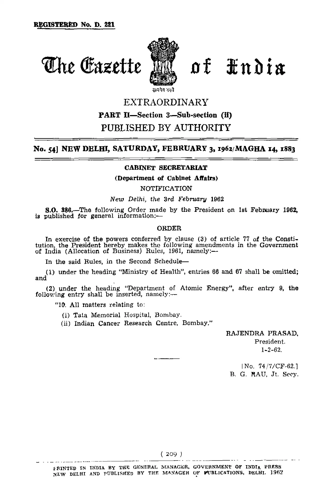

Amendment #4 (S.O. 386, 1962)
2 changes: 0 to the First Schedule, 2 to the Second Schedule. 2 applied
The order, page by page
Page 1 of 2

12Schedule 2 › Ministry of Health › entry 66; Schedule 2 › Ministry of Health › entry 67
applied at schedule 2 › ministry MINISTRY OF HEALTH › group_heading IV › entry 66 in the Rules after #4
after Schedule 2 › Department of Atomic Energy › entry 9
- 10. All matters relating to:
- i. Tata Memorial Hospital, Bombay.
- ii. Indian Cancer Research Centre, Bombay.
applied at schedule 2 › ministry DEPARTMENT OF ATOMIC ENERGY › entry 10 in the Rules after #4
Page 2 of 2
How this document was read
From the Government of India (Allocation of Business) Rules, 1961 and their amendments, as published by the Cabinet Secretariat (cabsec.gov.in), read by orgpedia. The readings of the older scanned gazettes have known gaps.